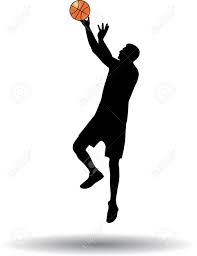
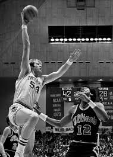
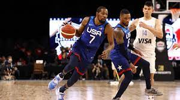

¿Qué es el basquet?
El baloncesto, también conocido como básquetbol, basquetbol o simplemente Básquet. Es un deporte de equipo, jugado entre dos conjuntos de cinco jugadores cada uno durante cuatro períodos o cuartos de diez minutos cada uno ―doce minutos cada cuarto en la NBA―. El objetivo del equipo es anotar puntos introduciendo un balón por la canasta. La puntuación por cada canasta o cesta es de dos o tres puntos, dependiendo de la posición desde la que se efectúa el tiro a canasta, o de uno, si se trata de un tiro libre por una falta de un jugador contrario. El equipo ganador es el que obtiene el mayor número de puntos.
Creación del basquet
El baloncesto nació como una solución a la necesidad de realizar alguna actividad deportiva durante el invierno, en la escuela de la YMCA (Young Men's Christian Association) de Springfield, Massachusetts. En 1891, James Naismith, profesor de educación física en la escuela, ideó el baloncesto como una actividad recreativa con una pelota basado en trece reglas. El juego se extendió por Estados Unidos, Canadá y el resto del mundo. Muchas de las reglas iniciales se mantienen hasta la actualidad, aunque algunos aspectos del juego tuvieron que modificarse para responder a desarrollos en la técnica de los jugadores y aspectos no previstos en el desarrollo del juego.
LIGAS Y JUGADORES
- NBA
- LNB
- EURO
- JUGADORES DESTACADOS
La National Basketball Association, más conocida simplemente por sus siglas NBA, es una liga privada de baloncesto profesional que se disputa en Estados Unidos desde 1949, cuando se fusionaron las ligas profesionales National Basketball League y la Basketball Association of America. Al ser una entidad privada, no depende oficialmente de la Federación Estadounidense de Baloncesto.

La Liga Nacional de Básquet es la máxima división nacional de básquetbol profesional de Argentina. Para la filosofía en la que se basa su creación, Liga Nacional es todo el básquetbol argentino desde Mini hasta Liga A. Toda la competencia debe apuntar a mejorar el nivel general y especialmente el de la selección nacional.

La Euroliga, es la máxima competición de clubes de baloncesto de Europa. En ella participan equipos de hasta 10 países diferentes miembros de FIBA Europa que provienen de un consorcio de las principales ligas profesionales de baloncesto de Europa, llamado Unión de Ligas Europeas de Baloncesto.

A lo largo de los años en este deporte surgieron grandes figuras que se fueron superando cada vez más, desde las apariciones de Bill Rusell o Michael Jordan, o así también Lebron James.
